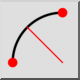

2 točki in polmer
Orodna vrstica / ikona:


Meni: Risanje > Lok > 2 točki in polmer
Bližnjice: A, D
Ukazi: arcradius | ad
Orodna vrstica / ikona:


Izriše krožni lok iz začetne in končne točke ter polmera.
loka (v smeri urinega kazalca ali v nasprotni smeri urinega kazalca) in rešitev (večji lok ali manjši lok).
začetne točke za rešitev, se nariše najbližja rešitev (polkrog z danim polmerom in smerjo).